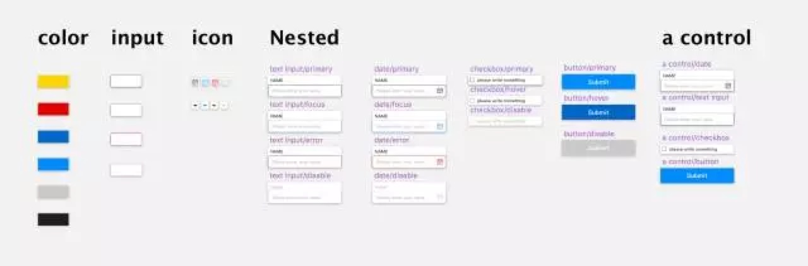
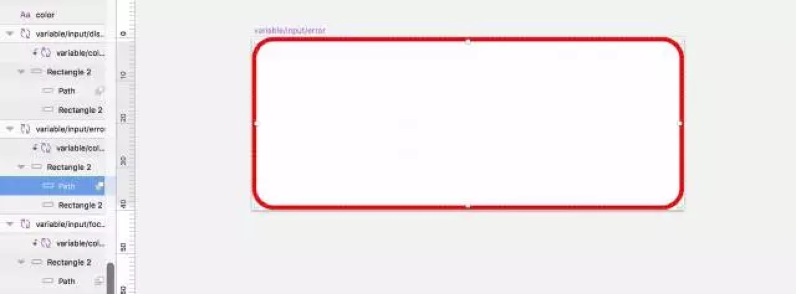
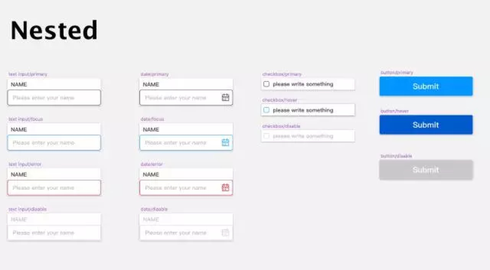
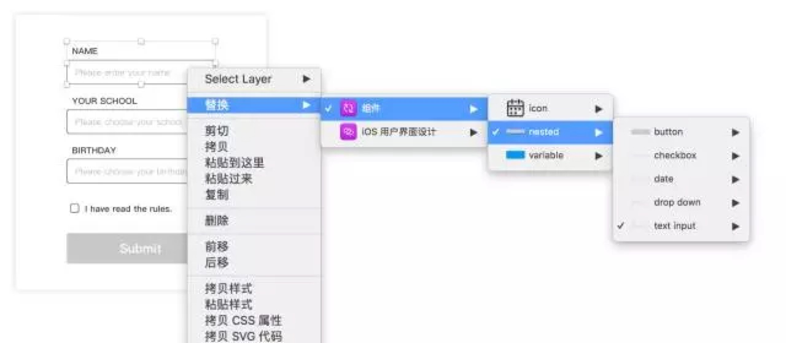
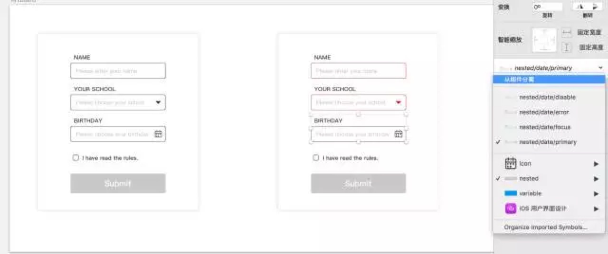

最近在medium上看到一篇有效管理sketch中symbol的文章。
光看原文来理解还是有点难度的，然后我结合自己的理解，实际练习了一下，在这里作个记录，与原来的方法稍有不同，不同之处已标示。
原文中，在这套Symbol的管理方法中，主要分为三个层级：
① variable（变量层）：主要包括整个文档的通用变量，包括色彩色值，文本框的粗细及圆角等等。
②nested （嵌套层）：主要包括各控件的各个状态，default, hover, click, disable等等。
③control：control中嵌套的nested，就是将nested中的元素作为symbol直接嵌套在control中，调用的是后续直接从control中选择。
原作者的意思是，使用用control可以在一定程度上节省搜索成本，将该控件所有的状态都放在其所对应的control层上，。
我刚开始操作的时候，因为组件按照字母顺序排列，所以，在control前加a就被人工置顶了，便于寻找。

首先， 我们在variable中，将文档色值设置好，这样便于整个文档的色彩管理。
在sketch的色盘中，也可以添加文档色彩，但是并不是很智能，如果进行微妙调节，可能不容易发现，导致整个文件的一致性不是很好。但是，在symbol中将默认色值设置好，后期修改的时候则牵一发动全身，避免了差异性，而且一步到位。
同样，在symbol中，将表单的输入框的粗细、圆角设置完毕，如下图，input框的error状态，我们首先画出input框，调用上面设置好的颜色的symbol，将刚刚画的input框作为蒙版，这个地方有个注意点，要对画的input框进行 智能缩放，否则，当调用该symbol时，如果尺寸发生变化，则预设的输入框的粗细会发生相对形变。

接着，调用在variable变量层中设置的symbol，将各个控件的各状态设置好：

但是，在随后的实际表单的制作过程中，我发现还是不加第三层级的时候比较好操作。 利用好‘/’，sketch自动分组。完全可以取代原作者使用control的功能。分组效果如下图：

而且，抛弃
第三层之后，布局完毕，直接在右边就可以选择状态了，分分钟。但是如果用了control因为多了一个嵌套层，在这一步的时候就会比较难选择，特别是控件多了的时候。

嗯，其实我觉得最棒的还是对于色彩的管理，以及对于输入框的管理，即variable层级的东西，我之前是没有这样操作过的🙈。
然后，源文件地址：https://pan.baidu.com/s/1slibXzJ（包括原作者的源文件和我画的😂）
还是看看文件，自己做一遍理解可能要深一点，🙈。
点击原文链接至原作者，请查收。
我搞了好久才想清楚第三层可以被完全取代，(/▽╲)，主要是英语太差。
作者：脏蠢虾 Shyanne